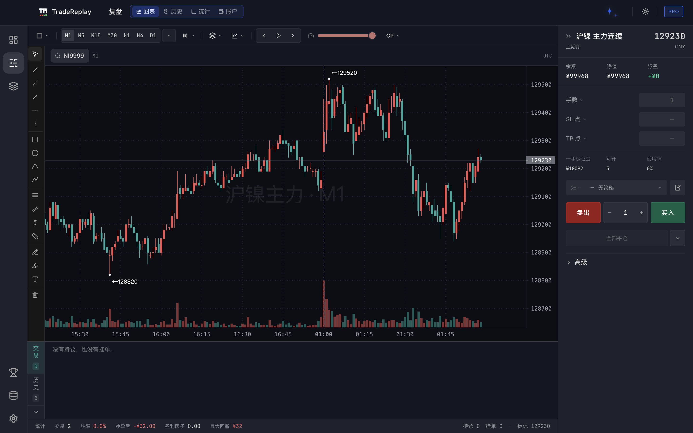
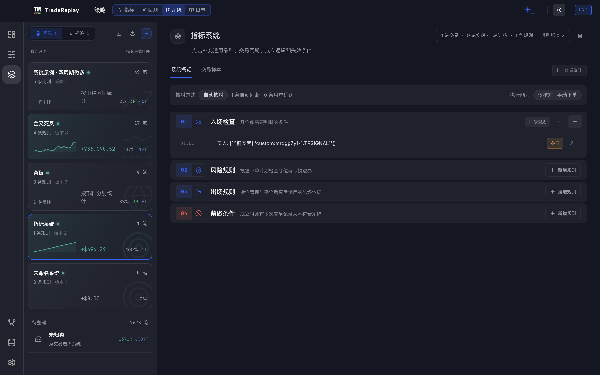
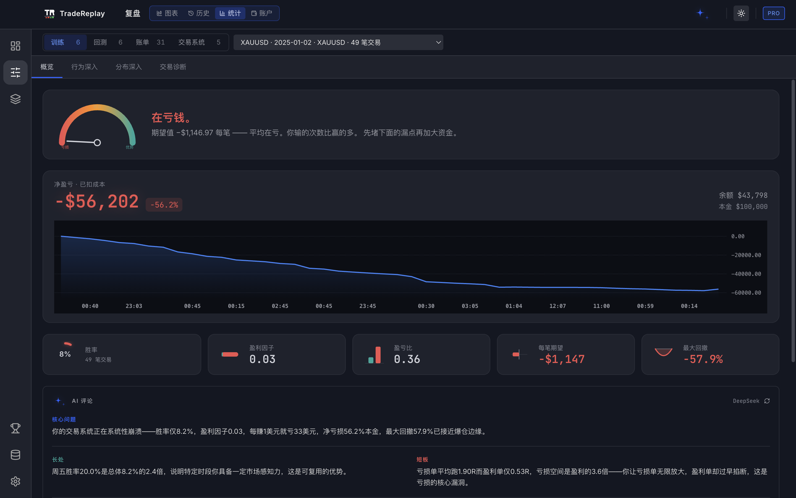

Replay without hindsight
Only the information that existed then.
DESKTOP TRADING PRACTICE & REVIEW
Replay historical markets without seeing the future. Define the rules. Import real trades. Let evidence—not memory—show you what to change next.



One desktop workflow—from practice to proof.
Only the information that existed then.
Entry, risk, exit, and prohibition.
Training, backtest, and live evidence.
Change one rule. Test it again.
ONE SYSTEM. THREE SOURCES OF TRUTH.
TradeReplay connects historical practice, explicit trading rules, and real execution records. The same system follows every decision instead of disappearing into notes and screenshots.
01 / 03
Advance through historical markets without seeing what comes next. Manage positions with realistic costs, margin, and liquidation while every drawing and decision stays attached to the session.
02 / 03
Build entry conditions, risk boundaries, exits, and no-trade rules in one workspace. Run the same system through Manual Check, Signal Navigation, or Automatic Backtest—and save the exact version with every trade.
03 / 03
Bring together training sessions, automatic backtests, MT4/MT5 statements, and CFMMC reports. Evaluate each system by profitability, risk quality, stability, evidence confidence, instrument, weekday, and time of day.
BUILT FOR THE PART THAT MOST TOOLS FORGET
TradeReplay preserves the market, the rule version, the execution, and the review as one connected record.
Open the whole market, follow entry-to-exit lines, and jump directly to any trade.
Every entry keeps the exact version of the system that was active at that moment.
Import MT4, MT5, and CFMMC statements without connecting a brokerage account.
Write indicators and strategies in the TongDaXin formula language, then replay or backtest them.
Commission, margin, precision, volume steps, stops, and liquidation are specification-driven.
Mentor reads deterministic statistics first, then explains patterns using your own trades.
NOT ANOTHER ONLINE JOURNAL
Most tools either replay the chart or journal the result. TradeReplay connects the rule, the decision, the execution, and the review.
Use the same rules in manual practice, signal navigation, automatic backtest, and live-trade review.
Instrument specifications drive commission, margin, price precision, volume steps, stops, and liquidation.
Practice sessions, imported statements, notes, and the core database stay on your own computer.
Core replay is free. Pro is a one-time desktop licence—not another monthly trading subscription.
A CLOSED PRACTICE LOOP
Practice becomes useful when it produces a clearer rule, a better decision, and evidence you can test again.
Write the conditions, boundaries, and situations where no trade is allowed.
Execute inside historical markets without seeing what happens next.
Compare training, backtest, and live evidence against the system you intended to follow.
Turn the largest leak into a specific change you can test again.
START FREE. UPGRADE ON PURPOSE.
Core replay stays free. Pro unlocks the complete trading-system workflow, full data coverage, advanced diagnostics, and automatic backtesting.
Free
Freeforever
Pro
One-timedesktop licence
International price and checkout link will appear when the Whop listing is live.
v1.50.20 · 2026-07-21
No account is required for the free edition. Install the desktop app, keep the database on your own machine, and begin with your own market data.
BEFORE YOU DOWNLOAD
Yes. It includes session creation, historical replay, simulated trades, journals, basic statistics, and custom indicators.
The core database stays on your computer.
TradeReplay supports MT4 and MT5 reports plus CFMMC monthly statements.
No. Pro is a one-time desktop licence.
Yes. The desktop interface supports both themes.